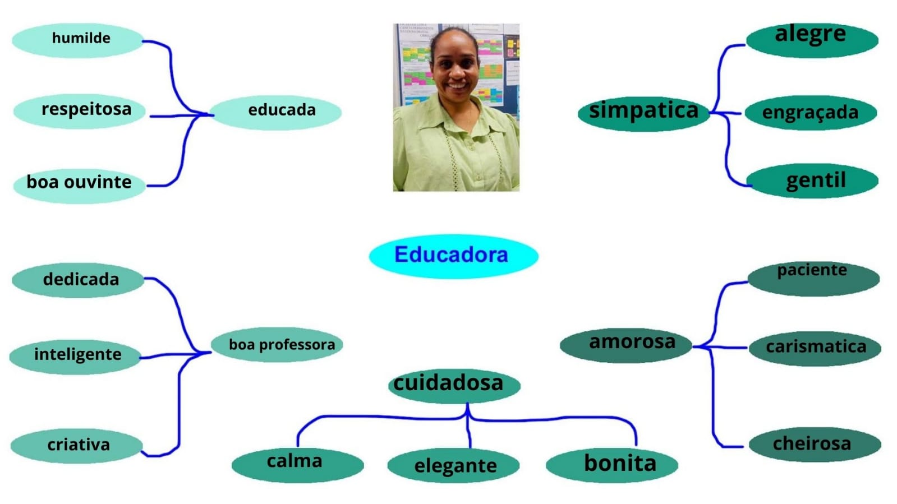
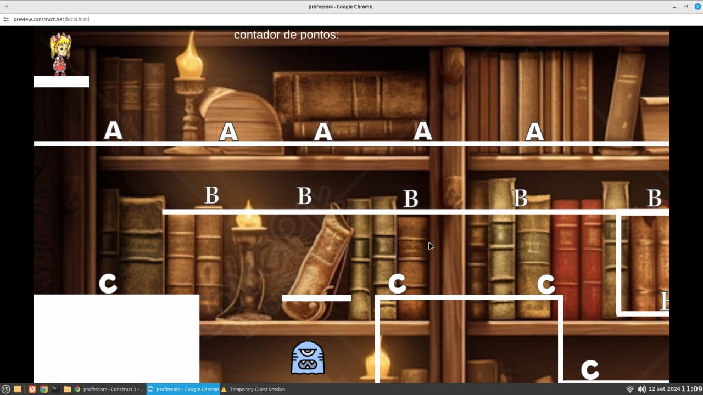

Formação Acadêmica?
Língua portuguesa, letras, espanhol e pedagogia.
Do que já trabalhou?
Como professora e no comércio.
Para quais turmas dos técnicos esse professor ministra aula e quais matérias ele dá nessas
turmas?
Técnico Desenvolvimento, dá aulas de língua portuguesa e redação e leitura.


Clique na imagem acima para jogar um produzido especialmente para a professora
Selma!
Clique na imagem acima para assistir um video sobre o nosso projeto!
Professora Selma, gostaria de agradecer por ensinar tão bem e tão gentilmente a nós. Obrigado por ser
uma
professora maravilhosa.
Ass.: João Vinpicius 1º TDS
Prezada Professora Selma,
Embora eu nunca tenha tido a oportunidade de ser seu aluno, ouvi tantos elogios sobre sua dedicação
e
paixão pelo ensino do português. Sua reputação como educadora exemplar precede você, e é com imensa
gratidão que escrevo estas palavras.
Com sincera admiração e gratidão,
Ass: Renan Boiko 3°T.D.S
Querida professora Selma,
Quero expressar minha profunda admiração pela sua competência como educadora de português. Agradeço
por
ser uma fonte de inspiração.
Ass.: Erick Bernardes Da Silva Santos 2ºTDS
Prof(a°): Selma
Acho você muito determinada a ensinar seus alunos.
Ass.: Estefany Vitória 2°TDS
Professor(a): Selma Alves Santana
“A educação alimenta a confiança. A confiança alimenta a esperança. A esperança alimenta a paz.”
Emily Eduarda da Silva Rosa - 4º INFO
 Clique na imagem acima para dar sua opinião sobre nosso projeto!
Clique na imagem acima para dar sua opinião sobre nosso projeto!